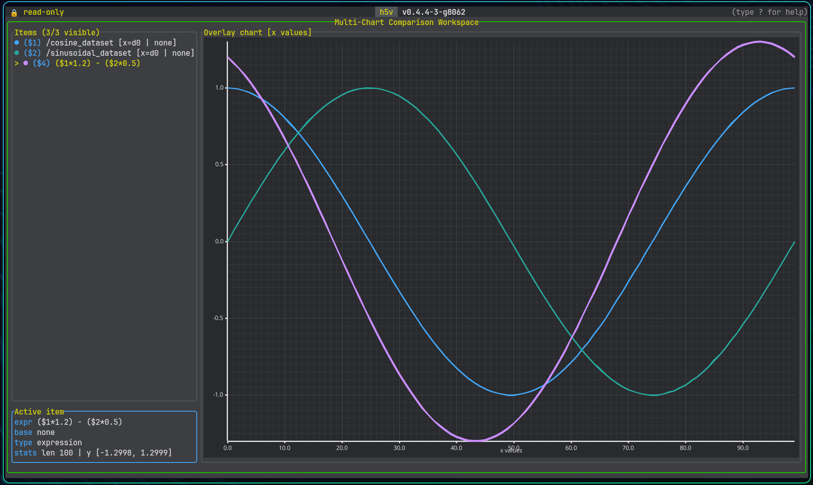

Multichart

Multichart is the comparison workspace for previewable series.
Sources:
- the currently selected previewable tree selection
- an explicit dataset reference
- an expression-defined series
Basic workflow
- Add a series with
mormchart add .... - Press
Mor runmchart opento enter the workspace. - Press
Enterto open a new expression, oreto edit the selected series. - Build derived series with expressions such as
$1 - $2,(load(/time)[..], $1), or$1[0..256]. - Use zoom and pan to inspect the area of interest.
Groups with H5V_PREVIEW_EXPR also work here. Pressing m on /group_preview adds the group preview expression as a chart item.
Expression editor
Enteropens a new expression without changing the chart viewporteedits the selected series in placeEntersubmits the current expressionTabcompletes the selected suggestionUpandDownmove through suggestions while editingEsccloses the editor
The editor validates expressions live and suggests chart item ids, dataset paths, and attribute references.
Raw dataset references such as load(/big_dataset)[..] are queued and loaded in the background when submitted.
Zoomed dataset-backed views can request a denser viewport sample in the background while the coarse overview stays visible.
Derived series can also refine to viewport detail when their referenced chart-item inputs share the same loaded detail window.
Config
Use h5v.multichart = { ... } in Lua to tune large-series behavior.
overview_max_sampleslimits the initial background overview sampledetail_enabledturns viewport-driven detail refinement on or offdetail_samples_per_columnscales viewport detail against chart widthdetail_min_samplesanddetail_max_samplesclamp viewport detail sizedetail_padding_ratioloads extra x-range around the visible viewportderived_detail_enabledlets derived series refine when inputs share the same detail window
Visibility and organization
- move through chart items with
j/k - reorder the selected item with
Alt+Up/Alt+Down - hide or show an item with
Spaceorv - remove the selected item with
d,Backspace, orDeletewhen nothing depends on it - clear the whole workspace with
C - open multichart help with
?
Views
Tab,Shift+Tab, ortcycles line, histogram, box plot, and comparison scatter- line focuses sampled curves
- histogram overlays visible-value distributions
- box plot summarizes visible-value quartiles, whiskers, and outliers
- comparison scatter aligns the selected series with the next visible series
Zoom and pan
+,=, orShift+Upto zoom in-orShift+Downto zoom outh/Shift+Leftto pan leftl/Shift+Rightto pan rightfto fit all visible seriesFto fit the selected seriescto reset zoom
Mouse interaction follows the same anchored viewport model as heatmap:
- wheel zoom over the plot anchors to the hovered point
- plain wheel zoom changes both x and y
Ctrl+ wheel zoom changes x onlyShift+ wheel zoom changes y only- right-click drag snapshots on press and pans on release
The same actions are available from the command line, including mchart fit ... and axis-specific zoom like mchart zoom x in 20.
Expression workflows
See Multichart expressions. For commands and keys, use the in-app help.